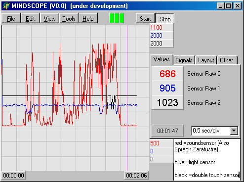
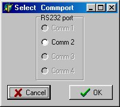
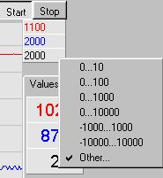
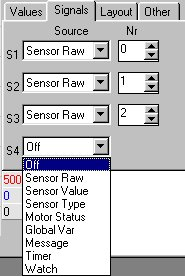
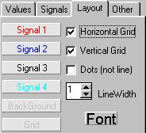

Robbert
Mattijs
Stef Mientki
august 2001
| Lego-Knex
Robbert Mattijs |
Lego MindScope
Stef Mientki august 2001 |
Main
features
|
|
|  | Contents |
| nice picture to be inserted | In the XY-mode there are always 2 signals
available, which of course can have only 1 color.
With the timebase the sample frequency can still be set. With the erase button, the display can be erased. |
Program
Menu 
This is my standard menu, where in this
case only the blue items are active.
|
|
|
|
|
|
| Load Config File
Save Config File Load Data File Save Data File Print Data Preferences Exit |
XT
Graph
XY Graph |
Connected
Test Connection Commport = Set RCX high power Set RCX low power RTS on DTR on Allow Task Task 9 ... |
Connected
Indicates if the selected commport is allocated. By clicking, the allocation
is toggled, so other programs can communicate with the RCX.
Test Connection
Try to connect to the RCX, and set the colored indicator block and
firmware version.
Commport =
Select a (different) RS232 port. (normally this will only be done once,
when the program is started for the first time)
Set RCX high/low Power
Because RCX transmit power can not be read, these just send the command
to the RCX. On program exit, the power status is saved in the inifile and
restored the next time MindScope is used.
RTS on
Normally leave RTS unchecked.
RTS is used by the IR-tower to allow transmission and receiving of
data. So the program will automatically toggle the RTS line to its needs.
Only in special cases (modified tower without batteries) it's necessairy
to set RTS continuously on.
DTR on
Normally leave DTR checked.
The IR-tower doesn't use the DTR line at all.
Modified towers can use the DTR line for several purposes.
Allow Task
For future use, now this is always checked (and disabled)
Task 9...
The number of the task, which will be used for the blocktransfer in
the fast sampling mode.
Start
Recording and getting Connection 
|
By using from the menu Tools / Test Connection these blocks will be updated, as well as all sample actions |
Starting and stopping of the sampling
is done by the identical named buttons.
The 3 colored blocks, displays the connection
with the RCX (green=OK, red=Wrong)
All settings will be saved in and ini-file, which is stored in the program directory. |
|  | When the program is started for the first
time, the dialog on the left is displayed.
All future restarts, the program start with this commport. You can change it from the menu TOOLS / COMMPORT. It will list the available (and free commports
upto nr 4), in this case thus only Commport 2, and you can select one of
the free commports for the IR-tower of the RCX.
|
Measurement
Cursor 
For measurements with the cursor, the
sampling must be off.
By moving the mouse-cursor into the plot
area, and holding the left-mouse-button, a vertical line is drawn, the
time from the left of the graph and amplitudes of the signals at the position
of the cursor line are displayed.
In XY-mode you'll see a crosshair, and
the (signal) values at the center of the crosshair are displayed.
Printing
an image 
With Alt-PrintScreen form the keyboard
you can copy the total program window to the clipboard and paste it in
a arbitrary paint program for printing.
|  | By clicking on the upper or lower axis
label, you can set another axis minimum and or maximum.
You can choose form a pre definied range (which sets both upper and lower value) or set every other range by selecting "other". The scaling can be done dynamically, that is while sampling is running, though it may affect timing a little. |
|  | First select the wanted signal from the
pulldown box, then select the appropiate number. The possible numbers are
limited to the RCX constraints and are in assembler notation (so sensor
1 has number 0 and so on).
Sensor 0..2
Signal 1 is always required, you cann't
switch it off.
|
Timebase 
In the slow modes (black values in the
tabel below), timing is done by the PC and samples are acquired by the
direct poll command.
Fast sampling (red values) is done by
blockmode transfer and stretching or compressing the display distance of
the points.
The real sample frequency is the fast
mode is only determined by the number of active signals, in the following
way
1 channel = 50 Hz
2 channels = 33 Hz
3 channels = 23 Hz
4 channels = 18 Hz
The fast mode needs to download a small
task into the RCX, the tasknumber can be choosen freely..
| Time / division | Total Time | Sample Frequency | Notes |
| 30 min / div
15 min / div 5 min / div 2 min / div 1 min / div 30 sec / div 10 sec / div 5 sec / div 2 sec / div 1 sec / div 0.5 sec / div 0.2 sec / div 0.1 sec / div |
5 hour
2.5 hour 50 min 20 min 10 min 5 min 100 sec 50 sec 20 sec 10 sec 5 sec 2 sec 1 sec |
1/60 Hz
1/30 Hz 1/10 Hz 1/4 Hz 1/2 Hz 1 Hz |
PC triggered polling
PC triggered polling PC triggered polling PC triggered polling PC triggered polling PC triggered polling |
Fast 1 Byte
Sampling 
For really continuous sampling (i.e. ECG recording) a special mode
is added, which samples at 70 Hz, 1 byte, 1 channel.
This special mode can be activated by the menuitem TOOLS / check FAST_1_BYTE.
If this mode is activated, the panel F1B in the menubar will light yellow.
| In this case no program is downloaded into the RCX, because it will
be necessairy to optimal scale the value to get enough resolution.
On the right is a simple NQC program that just divides the sensor value by a factor 4. It's obvious that after starting the task in the RCX,. the PC has no control over the RCX until the task is stopped by the RUN button on the RCX. Starting and stopping of the sampling in Mindscope is this mode only starts and stops the display of the signal. |
task fast_serial_1byte()
{ #define _S SENSOR_2 // the actual used sensor port // activate power to sensor and set raw value
// initialize the serial communication
while (true)
|
|  | Colors can be changed by pressing on one
of the labels.
Font is used for displaying the sampled or measured signals in a numerical format. The grid settings speaks for themself. Linewidth is the thickness of the line
used for drawing the signals.
|
| Usefull extensions | Extensions for fun |
|
|
| History
V1.2 april 2003 V1.1 august 2001 (not finished, use it only if there's need for fast
contiuous recording, i.e. ECG)
V1.0 may 2001
V0.0 april 2001, first release with only slow sampling |
|
Executable program including this help file, packed as a self extracting ZIP (V1.0), MINDSCOPE.EXE ( 400 kB).
V1.2 MINDSCOPE_FAST.ZIP
(400kB), use only when fast sampling requiered
The program requires Win95 or higher. (No
spirit.ocx required)
RCX 2.0 required (firmware >= 3.28).
No other InfraRed communication is allowed
during measurements
For the fast sampling modes, 1 free task
(selectable, default 9) in the current program is needed.
For displaying this help file a internet
browser should be installed.